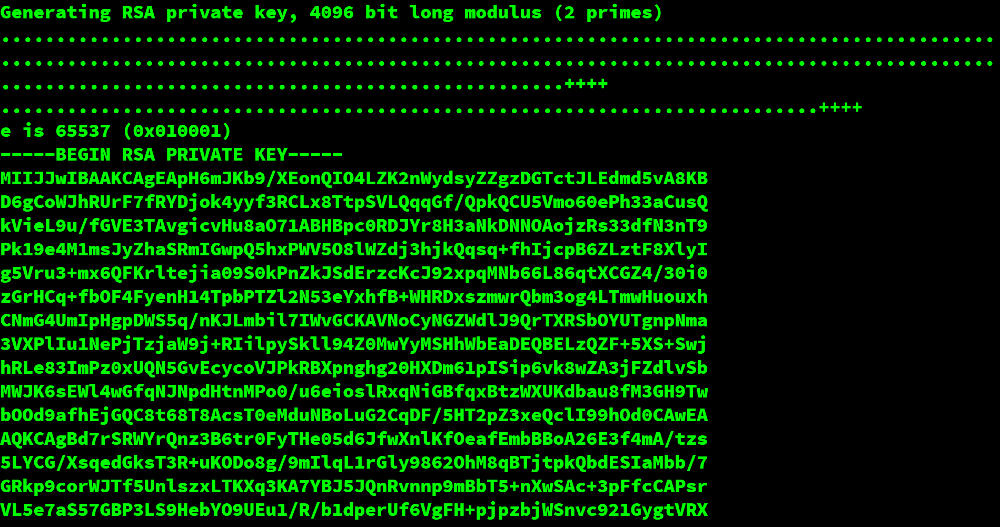

-----BEGIN PUBLIC KEY-----
MIICIjANBgkqhkiG9w0BAQEFAAOCAg8AMIICCgKCAgEApzCiydAXf4XajyD3PtiH
79vH6t2VyqbRylqW6tosNeD0rH4yyMk1HIueas2YYFlOgt2hVrnNa5zFIEKoco72
1Wu/fXlCoZzI61Zz/Q7JPJdIzeaQ+zQECsyGTZqPyADoPRoadWUqZTn7ulwMcoWb
Ydg14nl+ZQLC0H6n+v3ufBFeLYB9869x7GsZkXwmrOFkVcdwzPQPObfF4CDkjICw
UUKTuKWBu/WJo/NjKWDGQQL4A2RfZW6u3DLc/BHlQzHgL9Ac3hM6n/aN1IcR0UpR
4yN6KOVy2BYuGqTl91KA9dO0OlXFJkoCSeBfsME1j6DuVOlmgCtnhrdC2gOhp6Cl
rEYA/DsuKMmbf2/hX//fjQ6wPKNho8izLlFMdd6ClwessTMNzemamGPQwxnUwa5K
oEqCpW/LXT/Yrh/INKY9yQ7vruE/q417mJfbqfOmRitsgX4xm6IzWOb+D862Vr8y
Gt931gYvRBSyh2rjLJ/EkmQHMDQN/YbtnG7MlG6jpXehWkO+3XBDiDhfVqIO3fbX
k2qcJewffn3NYfeFat1WXIxSKVeIiVFPliPdDXxFTIwb5Ij+IvUrmZQbDlS/p3WT
GRt6yCtdLlbGPC6YZD+WLk58/9a/EydyzIaAo5z4K9TRj3ZOIY3V2XrEJQOF3ZXn
iTbKw8sfeyccOKQgWbMAo8ECAwEAAQ==
-----END PUBLIC KEY-----
That’s an RSA public key that I just generated using the commands:
$ openssl genrsa -out priv.pem 4096
Generating RSA private key, 4096 bit long modulus (2 primes)
..........................................................................................................................................................................................................................................................................++++
................................................++++
e is 65537 (0x010001)
$ openssl rsa -in ./priv.pem -pubout -out pub.pem
writing RSA key
$ cat pub.pem
But, what the heck is this?
It’s the public key part of an RSA key pair, which is an asymmetric encryption algorithm.
If you’ve been working with computers for a while, you may recognize the stuff between -----BEGIN PUBLIC KEY----- and -----END PUBLIC KEY----- as being base-64 encoded. Simply put, it’s binary data that’s been encoded into easily printable ASCII characters.
We can easily decode this into its original binary form using the following command:
$ base64 -d | hexdump -C
...
30 82 02 22 30 0d 06 09 2a 86 48 86 f7 0d 01 01 |0.."0...*.H.....|
01 05 00 03 82 02 0f 00 30 82 02 0a 02 82 02 01 |........0.......|
00 a7 30 a2 c9 d0 17 7f 85 da 8f 20 f7 3e d8 87 |..0........ .>..|
ef db c7 ea dd 95 ca a6 d1 ca 5a 96 ea da 2c 35 |..........Z...,5|
e0 f4 ac 7e 32 c8 c9 35 1c 8b 9e 6a cd 98 60 59 |...~2..5...j..`Y|
4e 82 dd a1 56 b9 cd 6b 9c c5 20 42 a8 72 8e f6 |N...V..k.. B.r..|
d5 6b bf 7d 79 42 a1 9c c8 eb 56 73 fd 0e c9 3c |.k.}yB....Vs...<|
97 48 cd e6 90 fb 34 04 0a cc 86 4d 9a 8f c8 00 |.H....4....M....|
e8 3d 1a 1a 75 65 2a 65 39 fb ba 5c 0c 72 85 9b |.=..ue*e9..\.r..|
61 d8 35 e2 79 7e 65 02 c2 d0 7e a7 fa fd ee 7c |a.5.y~e...~....||
11 5e 2d 80 7d f3 af 71 ec 6b 19 91 7c 26 ac e1 |.^-.}..q.k..|&..|
64 55 c7 70 cc f4 0f 39 b7 c5 e0 20 e4 8c 80 b0 |dU.p...9... ....|
51 42 93 b8 a5 81 bb f5 89 a3 f3 63 29 60 c6 41 |QB.........c)`.A|
02 f8 03 64 5f 65 6e ae dc 32 dc fc 11 e5 43 31 |...d_en..2....C1|
e0 2f d0 1c de 13 3a 9f f6 8d d4 87 11 d1 4a 51 |./....:.......JQ|
e3 23 7a 28 e5 72 d8 16 2e 1a a4 e5 f7 52 80 f5 |.#z(.r.......R..|
d3 b4 3a 55 c5 26 4a 02 49 e0 5f b0 c1 35 8f a0 |..:U.&J.I._..5..|
ee 54 e9 66 80 2b 67 86 b7 42 da 03 a1 a7 a0 a5 |.T.f.+g..B......|
ac 46 00 fc 3b 2e 28 c9 9b 7f 6f e1 5f ff df 8d |.F..;.(...o._...|
0e b0 3c a3 61 a3 c8 b3 2e 51 4c 75 de 82 97 07 |..<.a....QLu....|
ac b1 33 0d cd e9 9a 98 63 d0 c3 19 d4 c1 ae 4a |..3.....c......J|
a0 4a 82 a5 6f cb 5d 3f d8 ae 1f c8 34 a6 3d c9 |.J..o.]?....4.=.|
0e ef ae e1 3f ab 8d 7b 98 97 db a9 f3 a6 46 2b |....?..{......F+|
6c 81 7e 31 9b a2 33 58 e6 fe 0f ce b6 56 bf 32 |l.~1..3X.....V.2|
1a df 77 d6 06 2f 44 14 b2 87 6a e3 2c 9f c4 92 |..w../D...j.,...|
64 07 30 34 0d fd 86 ed 9c 6e cc 94 6e a3 a5 77 |d.04.....n..n..w|
a1 5a 43 be dd 70 43 88 38 5f 56 a2 0e dd f6 d7 |.ZC..pC.8_V.....|
93 6a 9c 25 ec 1f 7e 7d cd 61 f7 85 6a dd 56 5c |.j.%..~}.a..j.V\|
8c 52 29 57 88 89 51 4f 96 23 dd 0d 7c 45 4c 8c |.R)W..QO.#..|EL.|
1b e4 88 fe 22 f5 2b 99 94 1b 0e 54 bf a7 75 93 |....".+....T..u.|
19 1b 7a c8 2b 5d 2e 56 c6 3c 2e 98 64 3f 96 2e |..z.+].V.<..d?..|
4e 7c ff d6 bf 13 27 72 cc 86 80 a3 9c f8 2b d4 |N|....'r......+.|
d1 8f 76 4e 21 8d d5 d9 7a c4 25 03 85 dd 95 e7 |..vN!...z.%.....|
89 36 ca c3 cb 1f 7b 27 1c 38 a4 20 59 b3 00 a3 |.6....{'.8. Y...|
c1 02 03 01 00 01 |......|
This information is base-64 encoded because it’s not human-readable in its original form. What is this form, you ask? It’s a standard TLV-style binary data structure representing ASN.1 data, to be precise.
TLV (Tag-Length-Value) is a popular strategy for annotating binary data files. Imagine we want to encode some user data in a binary file. It might look something like this:
f0 10 75 73 65 72 40 65 78 61 6d 70 6c 65 2e 63 6f 6d f1 0b 6d 79 5f 75 73 65 72 6e 61 6d 65
If we hexdump it:
f0 10 75 73 65 72 40 65 78 61 6d 70 6c 65 2e 63 |..user@example.c|
6f 6d f1 0b 6d 79 5f 75 73 65 72 6e 61 6d 65 |om..my_username|
The idea is that the first byte (or bytes, depending on the format) represent a tag. In the basic example above, the byte f0 means email, and the byte f1 means username. The next byte(s) indicates the length of the information. So, f0 10 means that we’re expecting a 16 byte long email next. So, we read the next 16 bytes 75 73 65 72 40 65 78 61 6d 70 6c 65 2e 63 6f 6d and that should be an email value. If we decode those bytes as ASCII, what do we get? user@example.com. Voilà! Now rinse and repeat for the next bytes: a f1 username… that is 0b 10 bytes long… 6d 79 5f 75 73 65 72 6e 61 6d 65—my_username!
ASN.1 (Abstract Syntax Notation One) is a notation for describing data structures. It can represent integers, strings, sequences, booleans, etc. There are lots of different ASN.1 encoding rules, but we’re interested in the ones for binary, specifically, the Distinguished Encoding Rules (DER).
In ASN.1 DER, 30 (the first byte in our public key hexdump) is the tag for a sequence. The next byte, 82, actually says that the length of this field is specified in the following two bytes (ASN.1 DER specifies rules to allow for field lengths to be longer than those that would only fit in one byte). Thus, the length of our sequence is actually 02 22, or 546 bytes. You can look up many of the tags for ASN.1 DER at this link.
If we know that this public key is ASN.1 data, let’s not do all the work ourselves and just stick it into a handy-dandy online parser. Don’t do this with sensitive data!!
This parser tells us our data looks something like this:
SEQUENCE (2 elem)
SEQUENCE (2 elem)
OBJECT IDENTIFIER 1.2.840.113549.1.1.1 [rsaEncryption (PKCS #1)]
NULL
BIT STRING (1 elem)
SEQUENCE (2 elem)
INTEGER (4096 bit) 68207562626546916737438667056483633235...
INTEGER 65537
To understand what’s actually going on here, we need to look at RFC 5280, which defines the syntax for X.509 v3 certificates in ASN.1 DER notation:
SubjectPublicKeyInfo ::= SEQUENCE {
algorithm AlgorithmIdentifier,
subjectPublicKey BIT STRING }
This tells us the first bit of information that we need to parse what’s going on here. We have two fields: an algorithm, and a public key. The type of the algorithm field AlgorithmIdentifier is defined in the same RFC, later on:
AlgorithmIdentifier ::= SEQUENCE {
algorithm OBJECT IDENTIFIER,
parameters ANY DEFINED BY algorithm OPTIONAL }
Thus, we can determine that the algorithm identifier in the public key that we’ve been using is 1.2.840.113549.1.1.1, which happens to be the well-known object identifier (OID) for RSA.
The next value in our public key is NULL, which means that the algorithm requires no parameters.
Now we can move into the actual contents of the public key, that BIT STRING field. It contains an ASN.1 sequence which contains two integer values: a modulus and an exponent. These two fields make up the public key.
A note before I finish this up: before this particular format (which is called PKCS8) was used, PKCS1 was (and still is) common. The PKCS1 format is simply the contents of the BIT STRING from the PKCS8 format—the sequence containing the modulus and the exponent. See RFC 8017, which contains the definition:
RSAPublicKey ::= SEQUENCE {
modulus INTEGER, -- n
publicExponent INTEGER -- e }
That’s all I have for now. I hope you learned something from reading this post; I certainly enjoyed writing it!
On top of all the different sites I linked in this post, I’d like to credit the following sources I used while doing research for this post: